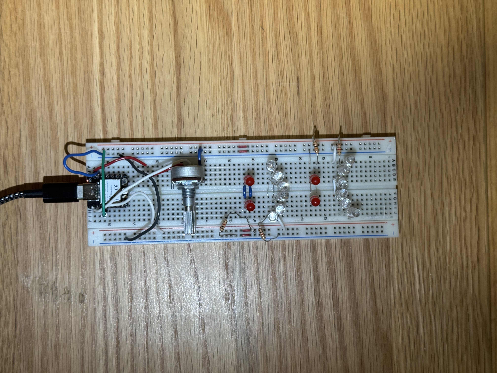
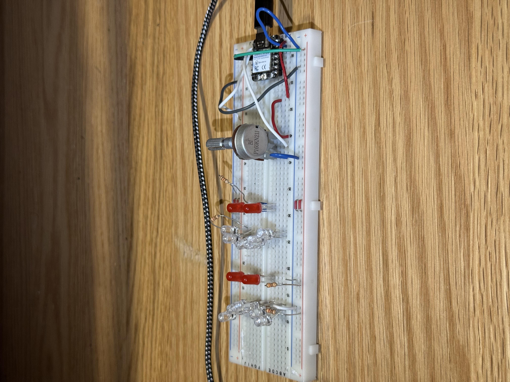
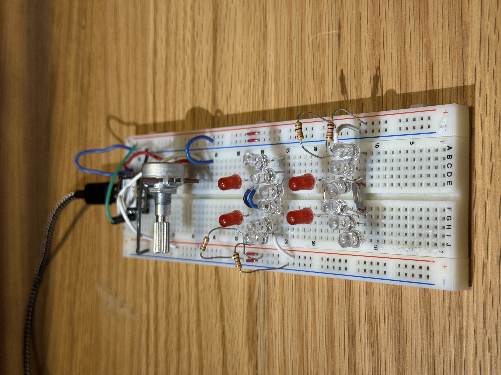
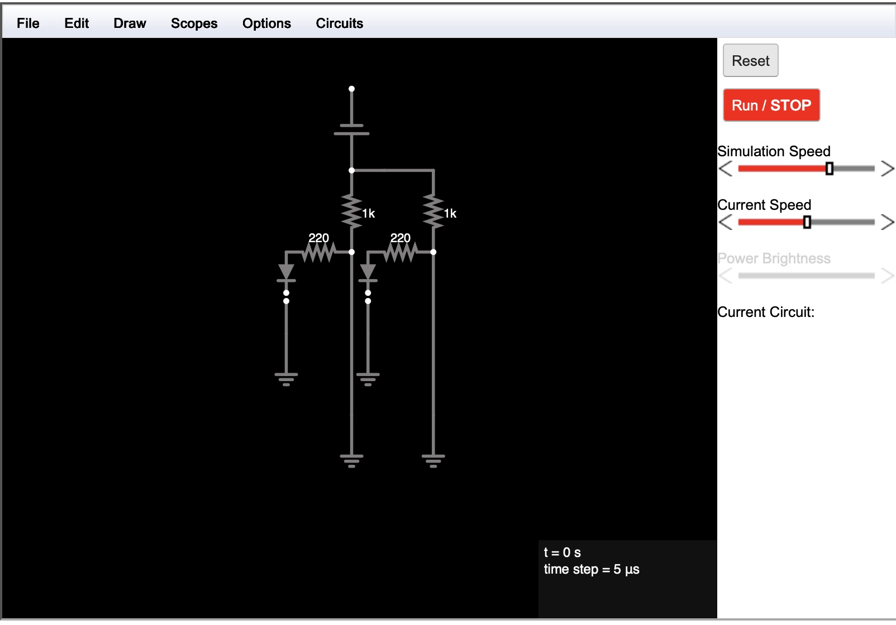

Week 04 · Microcontroller
Microcontroller Programming
For My Arduino project, I wired up and programmed my microcontroller in a way that if you turn a potentiometer one way, it displays a smiley face using LED's and when you turn the potentiometer the other way it displays a sad face. As a beginner, this project was difficult but a great experience and taught me programming fundamentals.


The code
I coded the microcontroller to read the potentiometer value, and if the value was greater than 2200, it would supply power to one set of LED's (Pin D1) and if the potentiometer value was less than 1900, it would supply power to the other set of LED's (Pin D2).
const int potPin = A0;
const int ledSetA = D1;
const int ledSetB = D2;
unsigned long previousMillis = 0;
const long interval = 50; // 50ms interval
void setup() {
pinMode(ledSetA, OUTPUT);
pinMode(ledSetB, OUTPUT);
Serial.begin(115200);
}
void loop() {
unsigned long currentMillis = millis();
if (currentMillis - previousMillis >= interval) {
previousMillis = currentMillis;
int potValue = analogRead(potPin);
Serial.println(potValue);
if (potValue < 1900) {
digitalWrite(ledSetA, HIGH);
digitalWrite(ledSetB, LOW);
} else if (potValue > 2200) {
digitalWrite(ledSetA, LOW);
digitalWrite(ledSetB, HIGH);
} else {
digitalWrite(ledSetA, LOW);
digitalWrite(ledSetB, LOW);
}
}
}
Building the circuit
The next step was to actually build the circuit, for this I used 1 potentiometer, 19 wires, 16 LED's and 4 resistors. I connected D1 to one set of LED's and D2 to the other set of LED's, making sure both were also connected to ground. After uploading my code and testing, it turned out just as I expected!

Schematic
Here is the schematic of my circuit, depicting 4 resistors, 2 sets of LED's and a power supply, I have no experience with falstad, so this didn't come out perfect.

Takeaway
In this project, I learned how to control lights and read sensors using Arduino. I used digital and analog functions to make the system react to input. I also replaced delay() with millis() to make the code run more smoothly. This helped me understand how programming can control real-world hardware.